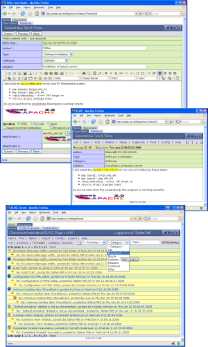

Home of the Electronic Logbook package by Stefan Ritt
ELOG is part of a family of applications known as weblogs . Their general purpose is :
ELOG is a remarkable implementation of a weblog in at least two respects :
|  |
On the left upper panel is a typical logbook page displayed by Netscape
Navigator. Each logbook page can contain attachments in a similar way to
emails. This makes it possible to store images or text files and retrieve them
easily. You could for example attach a sample configuration file which can
later be copied to the local machine with the "Save As..." function of
the Web browser.
Several logbooks can be served though a single ELOG server. Each logbook can use different attributes for its entries. The logbook can then be searched using these attributes. The right pane on the left image shows a search for all entries with attribute "Type" equal to "Configuration ", and the lower pane shows the search result. It is also possible to use full-text search in attributes and the entry body. While logbook entries are usually displayed one entry per page, they can also be listed consecutively which makes it easy to produce a paper printout of a logbook. Logbook pages can be edited or deleted. This feature can be turned off in the configuration file so that a logbook entries cannot be changed after being submitted. An additional feature is the automatic generation of a notification email messages based on a certain type or category of a logbook entry. Also try out the online demo ! |
The features of ELOG make it useful for several applications:
ELOG is released under the GNU Public License .
The author would like to give credits to following people:
Here are some talks and presentations given at various occasions:
If your are reading this documentation from your local ELOG server, check for updates on the ELOG Home Page .
{kind=link}